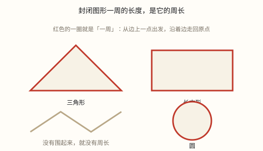
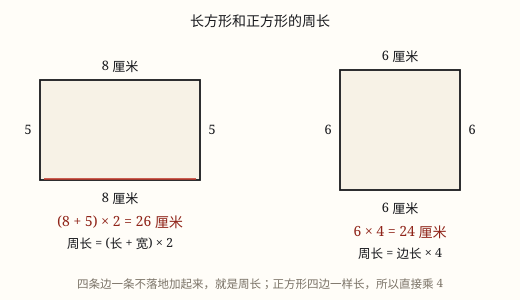

周长的认识与长方形、正方形的周长
周长是封闭图形一周边线的总长度。它量的是「边」，不是「面」，所以单位是长度单位。
| 所属主题 | 图形的认识与测量 |
|---|---|
| 所属模块 | 图形与几何 |
| 课标学段 | 第二学段（3~4年级） |
| 前置知识 | 长度单位：厘米、米、毫米、分米与千米 |
| 核心素养 | 量感几何直观空间观念运算能力模型意识 |
教材定位
人民教育出版社《2024年版》
对应三下第 4 单元「图形的面积」：周长的意义。；对应三下第 3 单元「长方形和正方形」：长方形和正方形的周长。
课标要求
| 图形与几何·图形的认识与测量 | 认识长度单位千米，知道分米、毫米；认识面积单位厘米²、分米²、米²；能进行简单的单位换算；能恰当地选择单位估测一些物体的长度和面积，会进行测量。 印刷第 29 页 行为动词：理解 |
|---|
说明
封闭图形一周的长度，就是它的周长。 关键词有两个：
一周——沿着图形的边缘走一圈，回到出发点，不能漏、不能重复。
长度——量的是那条边线有多长，不是图形占多大地方。
所以周长的单位是长度单位（厘米、米、千米），不是面积单位（平方厘米、平方米）。拿到一个结果先看看单位，这是判断有没有算错的第一个信号。
量周长最直接的办法是把所有边的长度加起来。弯曲的图形可以用绳子绕一圈再拉直量。
（长方形和正方形的周长）
长方形有四条边，对边相等：两条长、两条宽。所以周长 = 长 + 宽 + 长 + 宽。
把相等的两项合起来，就得到简便写法：周长 = (长 + 宽) × 2，记作 C = (a + b) × 2。
正方形四条边全都相等，都是边长。所以周长 = 边长 × 4，记作 C = 4a。
正方形可以看成「长和宽相等的长方形」，把它的公式代进长方形公式：C = (a+a)× 2 = 2a × 2 = 4a，完全一致。
使用场景
给照片加边框：边框有多长，取决于照片的周长。
绕操场跑一圈：跑的就是操场的周长。
给花坛围栅栏：需要多长的栅栏，由花坛周长决定。
缝衣服滚边：布条的长度要按衣服边缘的周长来裁。
快递缠胶带：绕箱子一圈需要多长胶带，看箱子的周长。
（长方形和正方形的周长）
装修贴踢脚线：沿房间一圈，要按周长买材料。
给相框配框条：照片的周长决定框条长度。
操场划线：跑道一圈的长度就是周长。
围菜地栅栏：长方形菜地要多少米栅栏，用周长算。
给方桌包边：正方形桌面四条边一样长，边长乘 4 即可。
注意点
周长必须用长度单位。看到结果写成「平方厘米」，一定是算成面积了。
周长和面积是两回事：周长一样的图形，面积可以不一样；面积一样的图形，周长也可以不一样。
只适用于封闭图形。开口的图形没有「一周」，也就没有周长。
数边的时候不能重复也不能遗漏，最好固定一个起点，按顺序绕一圈。
凹进去的部分也算进周长，不能只量外轮廓。
（长方形和正方形的周长）
公式里的「×2」不能漏。这是最常见的一步之差：只算了 长+宽 就交卷，结果正好是一半。
单位要统一再算。长 2 米、宽 50 厘米，先化成同一单位再套公式。
周长用长度单位，不要写成面积单位。
已知周长求边时先除以 2：长方形周长 24、长 8，宽 = 24 ÷ 2 - 8 = 4，不是 24 - 8 - 8（那样得到的是 8，等于两条宽的和，还要再除以 2）。
拼接图形的周长会变短：两个正方形拼成长方形，重合的两条边不再算进周长。

图 1：封闭图形一周的长度，才叫周长

图 1：长方形两组对边，正方形四条一样长
为什么是这样
算理推导
先分清两件事：一个图形有「里面那片地方」，也有「外面那一圈边」。前者叫面积，后者叫周长。
怎么把「一周」说清楚？想象一只蚂蚁沿图形边缘爬，从某一点出发，一直爬回原点到原点，它爬过的总路程就是周长。
既然是长度，就可以把每一段量出来再加起来。所以周长 = 所有边长之和——这是最朴素、也最不容易错的做法。
那为什么不干脆量整个面？因为「面」是用小正方形去铺的（那是面积），而周长是一条线，只能用尺子量或用绳子绕。两者的工具都不一样。
为什么有的图形周长一样面积却不一样？把一根 16 厘米长的绳子围成不同的长方形：7×1、6×2、5×3、4×4，周长都是 16，面积却分别是 7、12、15、16。越接近正方形，面积越大。
反过来也成立：面积都是 16 的图形，1×16 的周长是 34，4×4 的周长是 16，差了一倍多。所以周长和面积互不决定，是两个独立的量。
（长方形和正方形的周长）
回到周长的定义：封闭图形一周的长度。对长方形来说，就是四条边加起来。
长方形的四条边是：长、宽、长、宽。所以 C = a + b + a + b。
因为长方形对边相等，两条长一样、两条宽一样，可以把它们配对：(a+a) + (b+b) = 2a + 2b。
再提一个公共的 2 出来：2a + 2b = 2(a+b)，也就是 (长+宽)× 2。这一步只是把四个数相加变成了两步运算，没有引入任何新知识。
为什么要先加后乘？因为 (a+b) 是「一组长加一组宽」，乘 2 表示「这样的组有两组」。理解了这个，就不会漏掉那个 ×2。
正方形更简单：四条边都是 a，C = a+a+a+a = 4a。
把正方形看作「长 = 宽 = a 的长方形」代进去验证：(a+a)× 2 = 2a × 2 = 4a，两种算法结果一致。说明正方形公式只是长方形公式的一个特例。
动手实验
找一根 24 厘米长的绳子，两头打结成圈。把它围成不同的长方形（1×11、2×10、3×9、4×8、5×7、6×6），每次都用方格纸数出里面有几个小方格。你会得到一个很有意思的表：周长从头到尾都是 24，面积却从 11 一路涨到 36。绳子没变，围法变了，能圈住的地方就变了。这一下就把「周长」和「面积」彻底分开了。 （长方形和正方形的周长） 在方格纸上画一个长 6 宽 4 的长方形，沿着四条边一格一格数：上边 6、右边 4、下边 6、左边 4，总数 20。再用公式算：(6+4)× 2 = 20，一致。接着把两个边长 3 的正方形并排拼成一个长方形，数一数：单独两个正方形周长共 12+12=24，拼起来后新长方形长 6 宽 3，周长 (6+3)×2 = 18。少了 6，正好是重合的两条边。这一步能解释「拼接后周长变短」这个反直觉的现象。
按场景的例题
例 1（场景：购物消费） 给长方形花坛围栅栏
一个长方形花坛长 8 米、宽 5 米，围一圈栅栏需要多长？
解：把四条边加起来：8 + 5 + 8 + 5 = 26。
答：26 米。
例 2（场景：饮食与配比） 给照片配边框
一张照片长 15 厘米、宽 10 厘米，需要多长的边框条？
解：(15 + 10) × 2 = 50。单位用厘米，因为周长是长度。
答：50 厘米。
例 3（场景：物流运输） 给快递箱缠一圈胶带
一个正方体纸箱的棱长是 4 分米，沿一个面绕一圈需要多长胶带？
解：一个面是正方形，周长 = 4 × 4 = 16。
答：16 分米。
例 4（场景：计量与估算） 判断周长与面积
两个长方形周长都是 20 厘米，一个长 9 宽 1，一个长 5 宽 5。它们的面积一样吗？
解：9 × 1 = 9，面积 9 平方厘米；5 × 5 = 25，面积 25 平方厘米。周长相同面积不同。
答：不一样，分别是 9 和 25 平方厘米。
例 5（场景：工程建造） 给房间贴踢脚线
一个房间长 5 米、宽 4 米，贴一圈踢脚线需要多少米？
解：(5+4) × 2 = 18。注意门的位置若不需贴，实际用料略少，但按周长备料最保险。
答：18 米。
例 6（场景：行程出行） 给正方形宣传栏包边
一个正方形宣传栏边长 12 分米，包一圈金属边需要多长？
解：正方形周长 = 12 × 4 = 48。
答：48 分米。
例 7（场景：上学日常） 已知周长反求宽
一个长方形周长是 30 厘米，长是 9 厘米，宽是多少？
解：先除以 2 得到「长+宽」：30 ÷ 2 = 15；再减去长：15 - 9 = 6。
答：宽 6 厘米。
例 8（场景：农业生产） 两个正方形菜地拼在一起
两块边长 5 米的正方形菜地并排拼成一个长方形，拼好后的周长是多少米？
解：拼成的长方形长 10 米、宽 5 米，(10+5)× 2 = 30。也可以想：两块周长共 20+20=40，减去重合的两条 5 米边，40 - 10 = 30。
答：30 米。
常用推论
周长 = 所有边长之和，单位用长度单位。
长方形周长 = (长 + 宽) × 2，正方形周长 = 边长 × 4。
周长相同、越接近正方形面积越大。
弯曲图形的周长可以用绳子绕一圈再拉直量。
长方形周长 C = (a+b)× 2，正方形周长 C = 4a。
已知周长和长求宽：b = C ÷ 2 - a。
已知周长求正方形边长：a = C ÷ 4。
两个图形拼接后，周长减少重合边长度的两倍。
正方形是长宽相等的长方形，它的公式可由长方形公式推出。
易错点
错把周长的单位写成「平方厘米」。
为什么错周长是线的长度，只能用长度单位。写成面积单位说明脑子里想的是面积。
正确周长用厘米、米等长度单位。
错认为周长大的图形面积一定大。
为什么错周长和面积是两个独立的量。细长的图形周长大而面积小。
正确周长与面积互不决定，要分别计算。
错算长方形周长时只加两条边：8+5=13。
为什么错长方形有四条边，两两相等。只加长和宽等于只走了一半。
正确(8+5)×2 = 26。
错给开口图形（如一条折线）求周长。
为什么错周长只对封闭图形有意义，必须是能绕回出发点的一周。
正确先确认图形是否封闭，不封闭就没有周长。
错长方形周长算成 长 + 宽，忘了乘 2。
为什么错只算了一组长加一组宽，漏了另一组。四条边只走了两条。
正确(长+宽) × 2。
错长 2 米、宽 50 厘米，算成 (2+50)× 2 = 104 米。
为什么错两个长度单位不统一就相加了。
正确统一成米：(2+0.5)× 2 = 5 米。
错已知周长 30、长 9，算宽时写成 30 - 9 - 9 = 12。
为什么错30 是四条边的和，减去两条长后剩下的是两条宽，还要再除以 2。
正确(30 - 9 × 2) ÷ 2 = 6，或 30 ÷ 2 - 9 = 6。
错把周长的单位写成平方米、平方厘米。
为什么错周长是长度，不能用面积单位。写成面积单位说明与面积混淆了。
正确周长用米、分米、厘米等长度单位。
直观理解
把图形的边界想成一道围墙，周长就是这道墙的总长度——你沿着墙根走一圈，走了多远就是多长。而面积是墙围住的院子有多大。墙一样长的两座院子，一座方方正正、一座又细又长，里面的地差别可以很大。量围墙用米尺，量院子用方砖，两件事从来就不是一回事。 （长方形和正方形的周长） 绕长方形走一圈，走的是「一条长 + 一条宽」这样的路，走了两趟。所以公式 (长+宽)× 2 里的括号是「一趟」，乘 2 是「两趟」。正方形四条边一样长，一趟就是一条边，走四趟，所以是 边长× 4。公式不是新规定，只是给「四条边加起来」找了个省事的写法。
周长就是走一圈，沿着边线把路赶。四条边儿都加起，单位长度不能换。它和面积非一码，一个围墙一个院。 （长方形和正方形的周长） 长方形，四边走，两条长来两条宽。长加宽，再乘二，一圈长度就到手。正方形，更简单，四条边等乘上四。单位是长不是面，忘了乘二就减半。